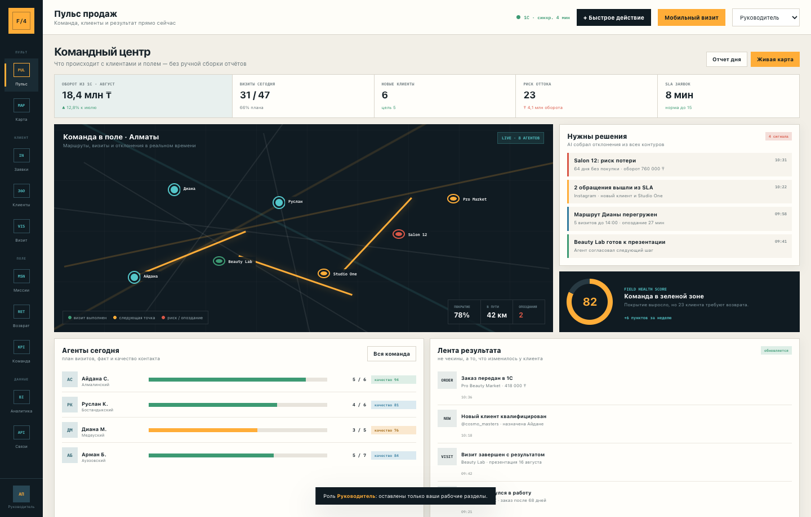
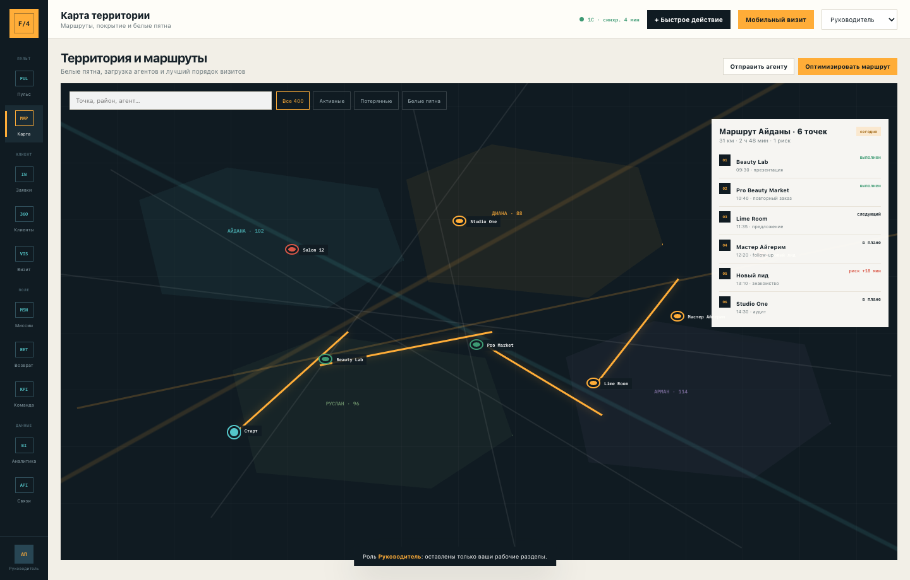
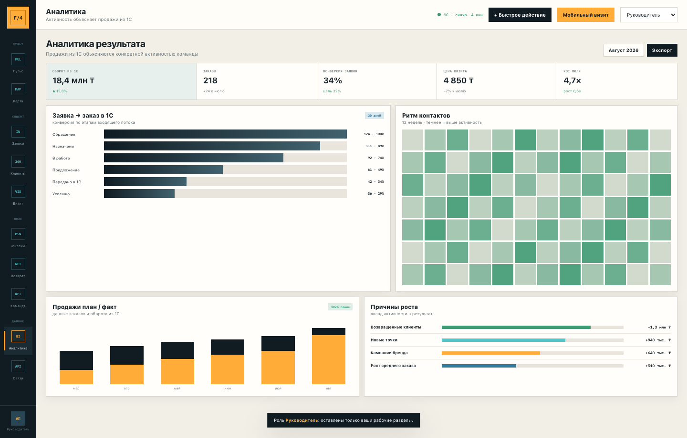
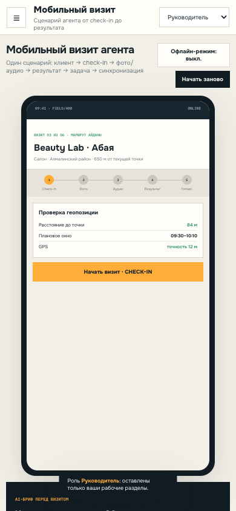
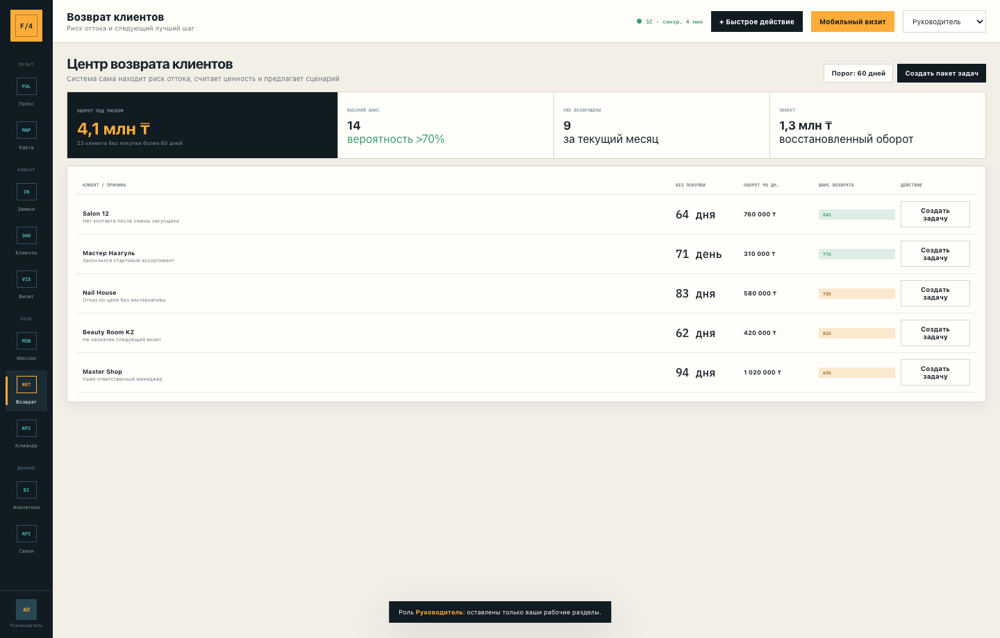
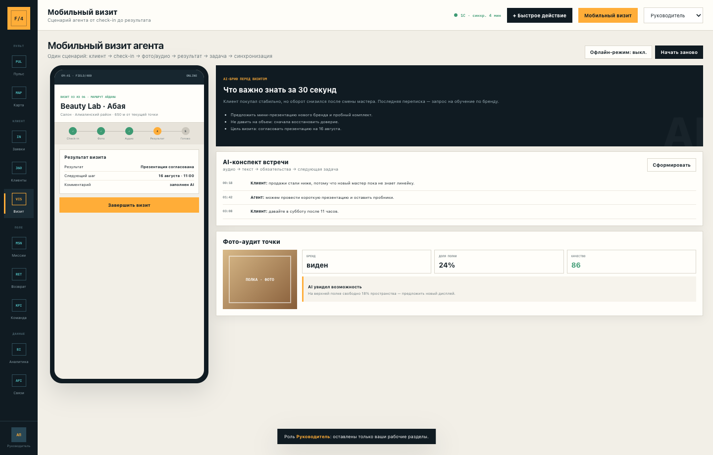

Единый контур для заявок, клиентов, маршрутов, визитов, задач, контроля команды и аналитики — с 1С как источником заказов и финансовых данных.
Полная версия: CRM + официальный WhatsApp/Instagram + 1С + PWA для агента + карта + офлайн + AI + аналитика.
недель до полного запуска
полевых агентов
активных точек
агент → директор
Подготовлено на основании документа «ТЗ. CRM-система для отдела продаж».
Наименование и реквизиты Заказчика в исходном ТЗ не указаны и будут внесены в финальную редакцию.
Клиент просит учёт лидов, визитов и KPI. Мы предлагаем следующий уровень: систему, которая подсказывает команде следующий шаг и показывает руководителю, какая активность действительно создаёт оборот.
Все обращения, маршруты, отклонения, просрочки и результаты — в одном командном центре без ручной сборки Google-таблиц.
GPS check-in/out, фото только из CRM, аудио по правам, обязательный результат и следующая задача. Работает офлайн.
Риск оттока, белые пятна территории, возврат клиентов, next best action и связь полевой активности с продажами из 1С.
01 · LEADОбращениеWhatsApp / Instagram, поиск дубля, SLA ответа.
02 · QUALКвалификацияНовая карточка либо единая история клиента.
03 · PLANМаршрутОкно визита, география, приоритет и загрузка.
04 · VISITВизитGPS, фото, аудио, результат и договорённости.
05 · 1CЗаказОформляется только в 1С — без дублирования.
06 · LOOPРазвитиеОборот, повторный контакт, риск и возврат.
CRM не создаёт второй склад, вторую номенклатуру или вторую финансовую систему. Она управляет коммуникациями и полевой работой, а затем получает из 1С статус, сумму, историю и оборот клиента.
Каждая роль получает свой интерфейс, но работает с одной карточкой клиента и одной историей событий.
Диалоги, медиа, шаблоны, SLA, распределение и привязка к клиенту.
Новые обращения Direct, квалификация и назначение ответственного.
Маршрут, check-in/out, фото, аудио, результат, следующая задача.
Территории, 400 точек, геозоны, белые пятна и оптимизация маршрута.
ID клиента, дата/сумма/статус заказа, история, оборот, последний заказ.
Продажи из 1С, активность, клиенты, территории, миссии и риски.
Команда, маршруты, отклонения, качество визитов и coaching.
Роли, справочники, интеграции, обязательные поля и журнал аудита.
Каналы подключаются через официальных провайдеров. История сообщений сохраняется централизованно.
Поиск по телефону, WhatsApp и 1C ID до создания новой карточки клиента.
Обязательные поля, статусы, SLA, периоды потери и KPI задаются без переписывания системы.
Архитектура рассчитана на расширение команды, территорий, каналов и отчётов.
Демо уже показывает будущий опыт пользователя: интерфейс можно открыть по ролям, перейти в каждый раздел, провалиться в клиента, оптимизировать маршрут и завершить визит.


Территории агентов, маршруты, риски, белые пятна и пересборка дневного плана.

Воронка, активность, динамика 1С и вклад возвратов, новых точек и кампаний.
PWA работает прямо в браузере телефона, устанавливается на главный экран и сохраняет операции при нестабильном интернете.

Последние заказы, переписка, риск, договорённости и рекомендованное предложение за 30 секунд.
Координаты, точность, время прибытия, отклонение и геозона торговой точки.
Дата, время и GPS; AI проверяет качество, наличие бренда и долю полки.
Запись по разрешению, расшифровка, резюме и выделение обязательств сторон.
Исход визита, комментарий, следующая задача, срок и ответственный.
Действия остаются в защищённой очереди и уходят на сервер после восстановления сети.
Руководитель видит доказательства, результат, созданный следующий шаг и влияние визита на заказ. AI подсвечивает слабые отчёты и помогает супервайзеру выбрать разговор для coaching.
Дополнительные механики делают систему не архивом действий, а ежедневным инструментом управления выручкой.
+01AI-бриф перед визитомКлючевой контекст, риск и следующее лучшее действие без чтения всей истории.
+02AI-конспект встречиОбязательства, договорённости и задача создаются из аудио автоматически.
+03Фото-аудит точкиКачество фото, присутствие бренда, доля полки и несоответствия.
+04Next best actionПерсональная подсказка: кому звонить, что предложить и почему сейчас.
+05Оптимизатор маршрутаОкна клиентов, приоритет, расстояние, загрузка и просрочки в одном плане.
+06Белые пятнаКарта выявляет территории без покрытия и сегменты с высоким потенциалом.
+07Recovery centerРиск 30/60/90, потенциальный оборот и пакет задач на возврат клиентов.
+08Полевые миссииКампании по бренду, сегменту или территории с планом, фото и эффектом.
+09Supervisor coachingОценка качества визитов, подбор кейсов и индивидуальный план развития.
+10Причинная аналитикаСвязь активности, возвратов, кампаний и новых точек с оборотом из 1С.
+11Контроль SLAНе просто таймер: эскалация, перераспределение и причина просрочки.
+12Конструктор правилСтатусы, обязательные поля, периоды потери и KPI без доработки кода.

Приоритет, потенциальный оборот, сценарий и массовая постановка задач.

Аудио, конспект, фото-аудит и рекомендованный следующий шаг.
Финальный стек уточняется после обследования 1С и провайдеров каналов. Ниже — целевая логика системы и границы данных.
Директор, супервайзер, администратор
Офлайн, GPS, камера, аудио
Разделы и данные по роли
Excel/CSV и печатные отчёты
Клиенты, лиды, события, задачи
check-in/out, медиа, результат
KPI, воронка, активность, риск
SLA, обязательность, 30/60/90
Карточки, события, права, задачи
Фото, аудио, документы
Идемпотентная синхронизация
Кто, что и когда изменил
REST/OData/обмен по согласованному API
Официальный Business API
Официальный Messaging API
Маршрутизация и модели анализа
Агент видит своих клиентов; руководитель — свою команду; директор — всю сеть.
Сроки хранения, доступ к аудио и скачивание задаются политиками.
Очередь, повторная отправка, контроль дублей и журнал ошибок интеграций.
Мониторинг, резервные копии и процедура восстановления.
Можно начать с MVP, однако максимальный управленческий эффект дают AI, офлайн, recovery, полевые миссии и причинная аналитика полной версии.
| Состав | MVP · 6 недель | FIELD / 400 · 8–10 недель |
|---|---|---|
| Пользователи, роли, клиенты 360°, история, задачи, отчёты | Включено | Включено |
| WhatsApp / Instagram: единый inbox, SLA, дедупликация | Включено | Включено |
| Визиты: GPS, фото, результат, следующая задача | Включено | Включено |
| 1С: клиенты, заказы, история, оборот, последний заказ | Базовый обмен | Расширенный и контролируемый |
| Карта, территории и дневные маршруты | Базовая карта | Оптимизация + белые пятна |
| Офлайн PWA, аудио, AI-бриф, конспект и фото-аудит | — | Включено |
| Recovery center, полевые миссии, coaching, причинная аналитика | — | Включено |
| Стоимость разработки и внедрения | 3 600 000 ₸ | 5 800 000 ₸ |
Старт проекта, обследование 1С, карта процессов и финальная архитектура.
Роли, клиенты, inbox, воронка, задачи, визиты и базовая интеграция готовы к приёмке.
Полная версия развёрнута, данные проверены, обучение проведено, акт приёмки подписан.
Фиксируем конфигурацию 1С, каналы, поля карточки, правила визита, KPI и выбираем пилотную группу. После этого выдаём календарный план и спецификацию интеграций.